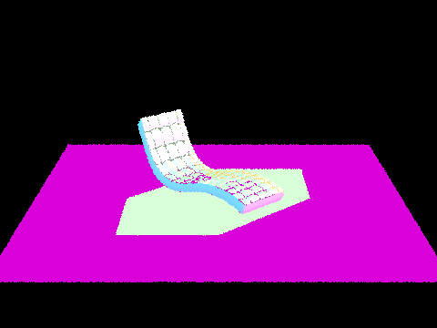
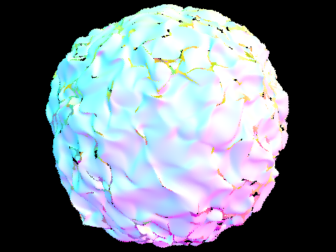
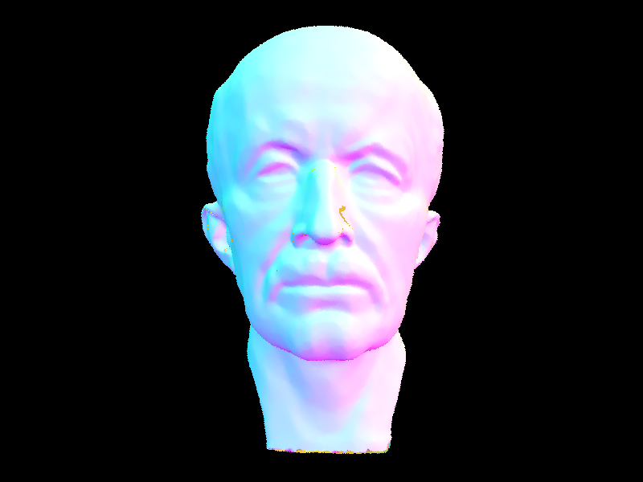
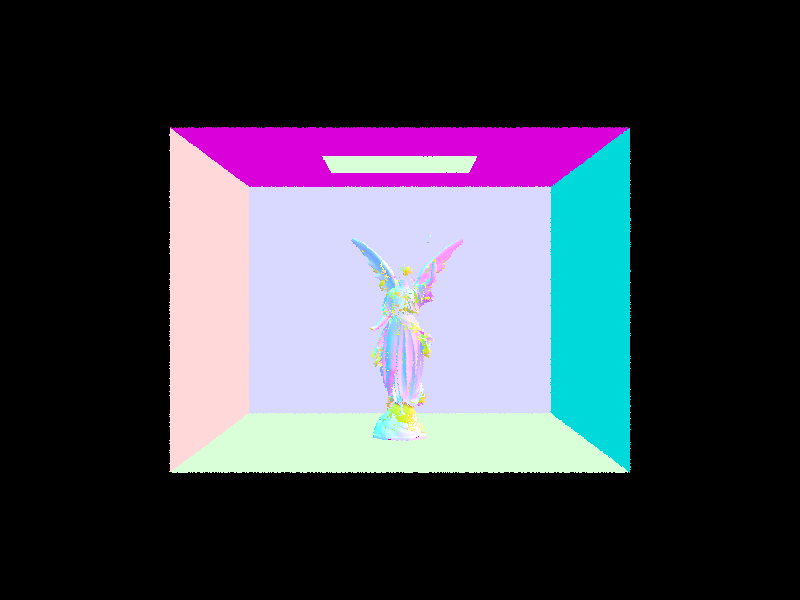

CS184/284A Spring 2025 Homework 3 Write-Up
Link to webpage: ccal-cs184-student.github.io/hw-webpages-apricots/hw3/index
Link to GitHub repository: github.com/cal-cs184-student/sp25-hw3-ah-hw3
Overview
Give a high-level overview of what you implemented in this homework. Think about what you've built as a whole. Share your thoughts on what interesting things you've learned from completing the homework.Part 1: Ray Generation and Scene Intersection
Ray generation is the process of transforming a 2D image coordinate (x, y) into a 3D ray in the world space. First, we converted hFov and vFov to radians, then we mapped the (x, y) position to the sensor plane, keeping in mind that we are given the pixel (x, y) which is the coordinate of the bottom left of the pixel. We subtract 0.5 from both x and y to center the pixel at the center of the sensor plane (0, 0, -1). Then, we perform the mapping my multiplying by sensorWidth and sensorHeight (calculated via the given sensorplane coordinates). Finally, we create a ray with our calcuated sensor coordinate and set the near and far clipping plane per the spec implementation notes.As for the primitive intersection parts of the pipeline, we used Moller-Trumbore intersection algorithm to calculate the intersection of a ray with a triangle. We first calculated the edge vectors and the normal vector of the triangle, then we calculated the determinant of the matrix formed by the edge vectors and the ray direction. We then calculated the barycentric coordinates of the intersection point and checked if the point was inside the triangle. If it was, we updated the intersection point and the t value of the ray.
We also implemented the intersection of a ray with a sphere using the quadratic formula. We calculated the discriminant and checked if the ray intersected with the sphere. If it did, we updated the intersection point and the t value of the ray. Overall, we made use of barycentric coordinates in our computation as to avoid working with explicit plane equations which can be difficult to calculate.
Here are some small dae files rendered with normal shading at 480 x 360 size.
|

|

|

|
Part 2: Bounding Volume Hierarchy
In this part, we implemented a bounding volume hierarchy (BVH) to help accelerate the rendering process. First, we compute the bounding box of the current node, then we store the primitives in the node if it is a leaf, otherwise, we compute the centroid bounding box of all the primitives in this node's range. Finally, we find the longest splitting axis, and partition the primitives based on the median of the centroid bounding box along the longest axis. Then, we recursively build the BVH tree until we reach a leaf node.
Here is a .dae file rendered -- we ran into a bug, where there are yellow spots that appear on the image, but we couldn't figure out what the issue was in hw party.
|

|

|